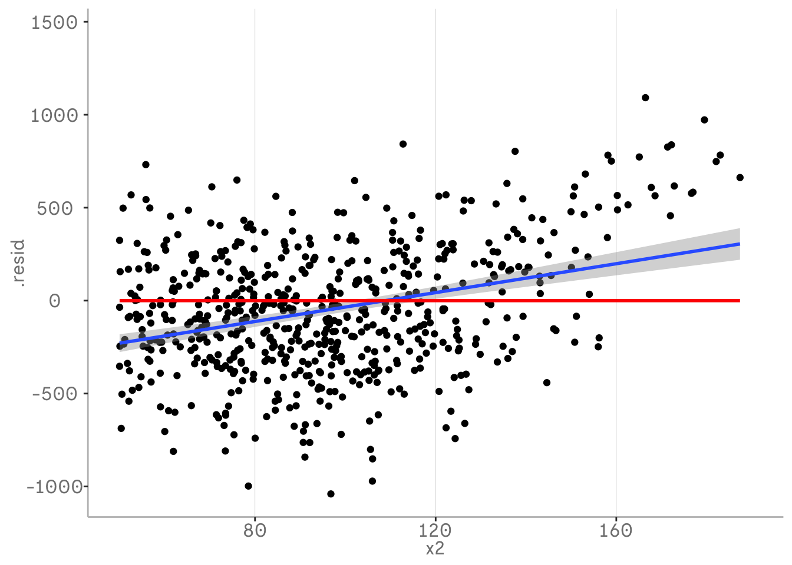
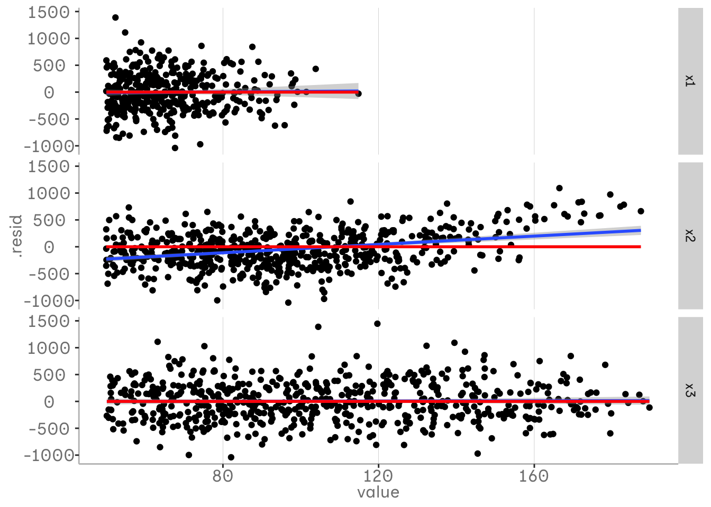
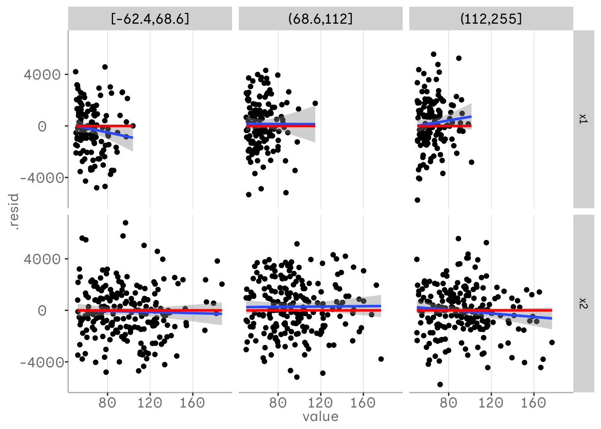
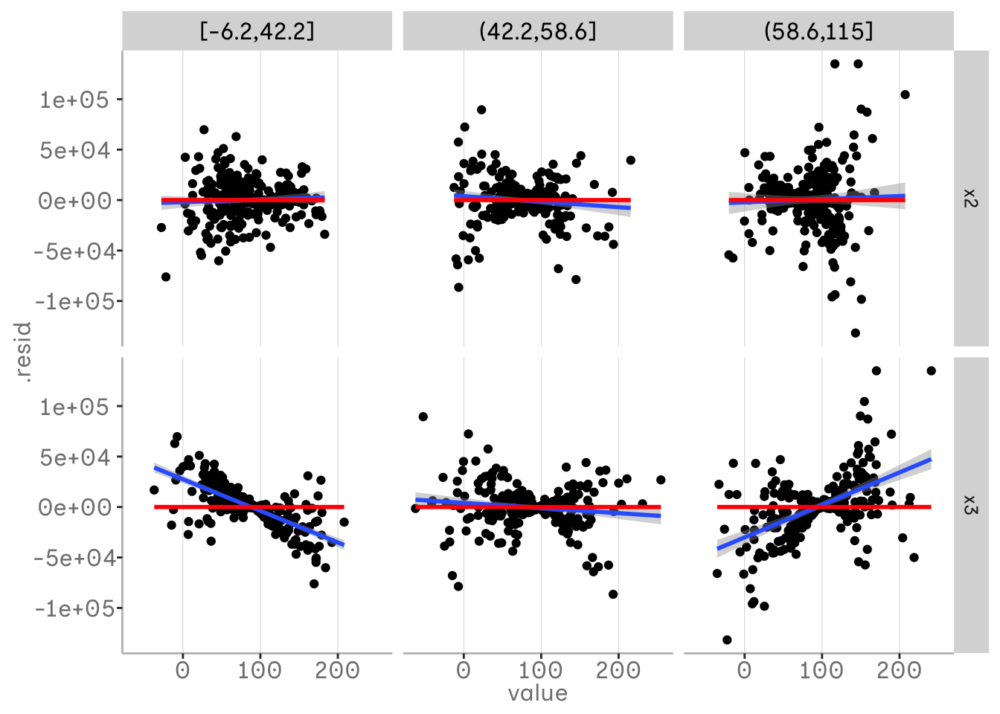
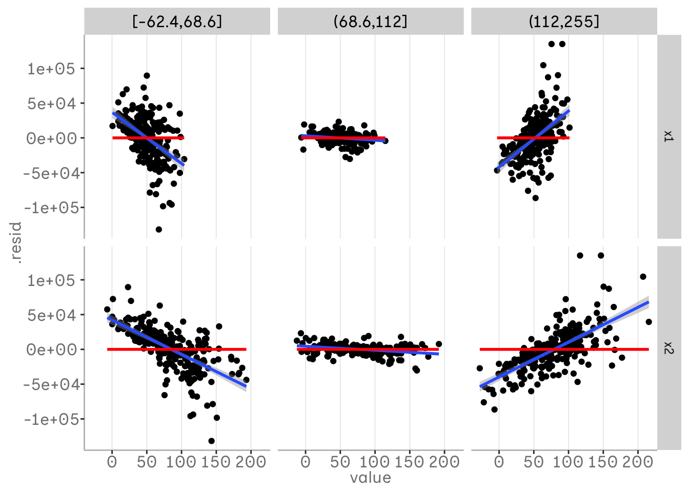
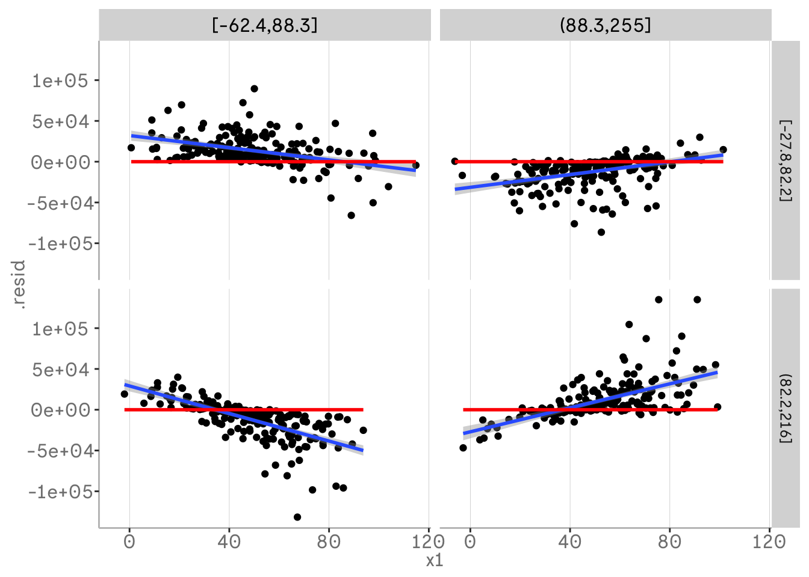
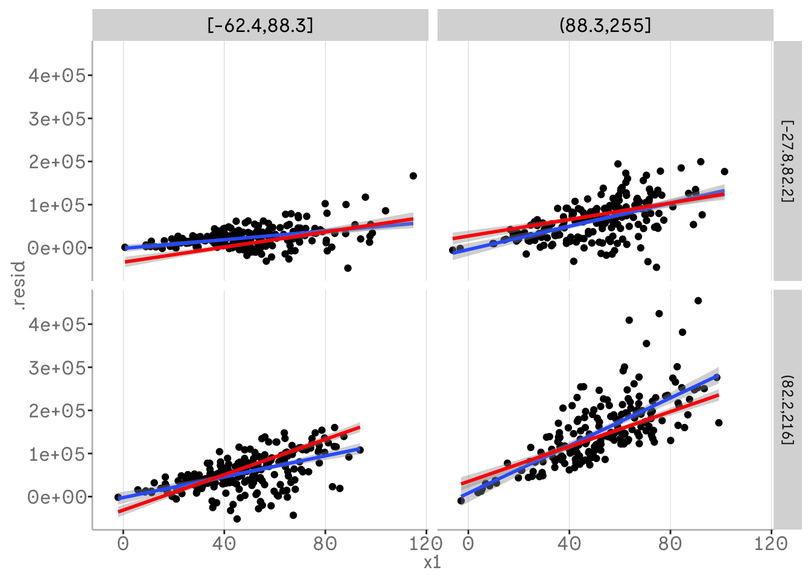

m0 <- lm(y0 ~ x1 + x2 + x3)
m0 %>%
broom::augment() %>%
mutate(x3 = dvmisc::quant_groups(x3, 3)) %>%
pivot_longer(c(x1,x2)) %>%
ggplot(aes(x = value, y = .resid))+
geom_point()+
geom_smooth(method = "lm")+
geom_smooth(aes(x = value, y = 0), method = "lm", color = "red")+
facet_grid(vars(name), vars(x3))Introduction to partial residual plots
R
modelling
Partial residual plots can tell you how you should adjust your model and even if have you have missed something. They are especially useful to spot interactions in your data. In this post we will look at some handy ways you can them and create PSP with tidy tools
What we have missed
In a PRP we plot the residuals or error of our Regression model against one or more independant variables. This allows us a couple of things - starting with the first one: discovering non randomness in the residuals. Why is non randomness an issue? When doing a Regression, we assume that we have got some error as jitter around our predictions that does not contain any remaining trend. This error is caused by all that stuff we do not know about our independent variable and can not model. Theory assumes, that if we had all the variables in the iniverse with a causal relationship to our independent variable , we could make predictions without any error. However this is fictional and error is part of our complex reality, that we can only approxiamte using such a naive linear representation of the world. It is only a problem if our error is not random, because then there is some sort of trend or pattern left in the data that we could have modeled with our variables. In practice this can appear if there is some sort of non linear trend in our data or interactions of variables, that we need to include in our model.
In the following example we will start by visualising the residuals from our regression using broom and ggplot by plotting those against one of our independent variable used in the model.
Through the use of geom_smoothregression lines we can spot remaining trends in our residuals. The blue regression line is our helper tool to spot those. Keep in mind that we want to have a intercept and slope of approximaetly zero - this means there is no trend left. The red line represents the predictions of our model. In the standard broom::augment() output those are scaled to 0 when plotting our residuals.
In the following plot you can see that both lines are approximately on the same slope, indicating that we did not spot any remaining trends in the residual that our model did not catch. At least regarding the variable x3.
In the second plot our blue regression lines indicate that there is still some pattern left in our variable x2 that is not included in our model. This is caused by a quadatric relationship that still remains in our residualds. This is a sign that we should adjust our model.
m1 <- lm(y_ac ~ x1 + x2 + x3)
m1 %>%
broom::augment() %>%
ggplot(aes(x = x2, y = .resid))+
xlim(c(50,190))+
geom_point()+
geom_smooth(method = "lm")+
geom_smooth(aes(x = x2, y = 0), method = "lm", color = "red")+
ylab("residuals of y_ac ~ x1 + x2 + x3")
Spotting Interactions
In the plots above we only looked at one variable of our model. However we do have multiple variables in our model and we might be interested in looking at them all. One way of doing this is pivoting the data into a long format and visualising those in a grid. Now we can spot non linear trends all of our predictor variables. In the following plot we can see that the residuals for x1 and x3 do not contain any unmodelled information, while the residualds for x2 does.
m1 <- lm(y_ac ~ x1 + x2 + x3)
m1 %>%
broom::augment() %>%
pivot_longer(c(x1, x2, x3)) %>%
ggplot(aes(x = value, y = .resid))+
xlim(c(50,190))+
geom_point()+
geom_smooth(method = "lm")+
geom_smooth(aes(x = value, y = 0), method = "lm", color = "red")+
facet_grid(vars(name))
However in this can we only plotted our predictor variables against the residuals of our model and thus our response variable. To spot how our predictor variables relate to each other we might want to plot those against echt other as well. One way of doing this is plotting those as binned into quantiles in our grid. We can do this using the function dvmisc::quant_groups() and sort the values of x3 into 3 bins based on our quantiles.
This allows us to spot interactions between our variables x3 and and x1 or x2 that are not in our model. In this plot you can see that the relationship between x1 and y changes at different qunatiles of x3. For lower values of x3 there is a negative relationship between x1 and x3, while the relationship gets more positive with higher values. We can see that our model currently does not account for this interaction.
m1 <- lm(y1 ~ x1 + x2 + x3)
m1 %>%
broom::augment() %>%
mutate(x3 = dvmisc::quant_groups(x3, 3)) %>%
pivot_longer(c(x1,x2)) %>%
ggplot(aes(x = value, y = .resid))+
xlim(c(50,190))+
geom_point()+
geom_smooth(method = "lm")+
geom_smooth(aes(x = value, y = 0), method = "lm", color = "red")+
facet_grid(vars(name), vars(x3))
This method can also be used to spot three way interactions. If we already included a two way interaction and still see a change in the relationship of one variable there might be a additional interaction. In the following example we plotted x1 in our bins and thus can see how x2 and x3 vary for different quantiles of x1. We can see that there is no real trend left in the residuals when looking at x2 - we already included the interaction for x2 and x1. For x3 we can see that there is some pattern left and this trend in the residuals varys across x1.
set.seed(123)
x1 <- rnorm(800, 50, 20)
x2 <- rnorm(800, 80, 40)
x3 <- rnorm(800, 90, 50)
error <- rnorm(800, 0, 500)
y1 <- 300 - (0.2 * x1) + (0.2 * x2) + (0.2 * x1 * x2* x3) + error
m3 <- lm(y1 ~ x1 * x2 + x3)
summary(m3)
Call:
lm(formula = y1 ~ x1 * x2 + x3)
Residuals:
Min 1Q Median 3Q Max
-131705 -9143 270 10496 134970
Coefficients:
Estimate Std. Error t value Pr(>|t|)
(Intercept) -71175.508 5705.903 -12.474 <2e-16 ***
x1 -158.603 104.089 -1.524 0.128
x2 -55.711 59.968 -0.929 0.353
x3 825.948 17.510 47.170 <2e-16 ***
x1:x2 20.431 1.159 17.631 <2e-16 ***
---
Signif. codes: 0 '***' 0.001 '**' 0.01 '*' 0.05 '.' 0.1 ' ' 1
Residual standard error: 24600 on 795 degrees of freedom
Multiple R-squared: 0.8729, Adjusted R-squared: 0.8722
F-statistic: 1364 on 4 and 795 DF, p-value: < 2.2e-16m3 %>%
broom::augment() %>%
mutate(x1 = dvmisc::quant_groups(x1, 3)) %>%
pivot_longer(c(x3, x2)) %>%
# mutate(x3 = paste("x3", x3)) %>%
# mutate(x2 = dvmisc::quant_groups(x2, 2)) %>%
# mutate(x2 = paste("x2", x2)) %>%
ggplot(aes(x = value, y = .resid))+
# geom_smooth(aes(x = .fitted))+
geom_point()+
geom_smooth(aes(x = value, y = .resid), method = "lm")+
geom_smooth(aes(x = value, y = 0), col = "red", method = "lm")+
facet_grid(vars(name), vars(x1))
This gets more clear when plotting x3 as our bins and both x1 and x2 still vary.
m3 %>%
broom::augment() %>%
mutate(x3 = dvmisc::quant_groups(x3, 3)) %>%
pivot_longer(c(x1, x2)) %>%
# mutate(x3 = paste("x3", x3)) %>%
# mutate(x2 = dvmisc::quant_groups(x2, 2)) %>%
# mutate(x2 = paste("x2", x2)) %>%
ggplot(aes(x = value, y = .resid))+
# geom_smooth(aes(x = .fitted))+
geom_point()+
geom_smooth(aes(x = value, y = .resid), method = "lm")+
geom_smooth(aes(x = value, y = 0), col = "red", method = "lm")+
facet_grid(vars(name), vars(x3))
If you are working with real data it might be helpful to use less bins and plot two of your three variables binned into quantiles.
m3 %>%
broom::augment() %>%
mutate(x3 = dvmisc::quant_groups(x3, 2)) %>%
mutate(x3 = paste("x3", x3)) %>%
mutate(x2 = dvmisc::quant_groups(x2, 2)) %>%
mutate(x2 = paste("x2", x2)) %>%
ggplot(aes(x = x1, y = .resid))+
# geom_smooth(aes(x = .fitted))+
geom_point()+
geom_smooth(aes(x = x1, y = .resid), method = "lm")+
geom_smooth(aes(x = x1, y = 0), col = "red", method = "lm")+
facet_grid(vars(x2), vars(x3))
While our residuals are currently centered to our model predictions, but can also plot the model adding back the fitted values from the augment ouput back to residuals. This allows us to plot our predicted slopes for the two way interaction the thus the effects of the third variables on that slopes. In other words we can interpret how our two way interaction varies across our third variable e.g. x1 and x2 vary across x3.
m3 %>%
broom::augment() %>%
mutate(.resid = .fitted + .resid) %>%
mutate(x3 = dvmisc::quant_groups(x3, 2)) %>%
mutate(x3 = paste("x3", x3)) %>%
mutate(x2 = dvmisc::quant_groups(x2, 2)) %>%
mutate(x2 = paste("x2", x2)) %>%
ggplot(aes(x = x1, y = .resid))+
# geom_smooth(aes(x = .fitted))+
geom_point()+
geom_smooth(aes(x = x1, y = .resid), method = "lm")+
geom_smooth(aes(x = x1, y = .fitted), col = "red", method = "lm")+
facet_grid(vars(x2), vars(x3))
Beyond reversed engeneering
In all of our plots so far we displayed the residuals of our model against a variables that is itself already a independent variable in the model. However we do not need to. This allows us plot a variable against our response variable while controlling for another variable.
For example we might be interested in including x1 into the model. Thus we only want plot x1 against y, while controlling for x2. In comparison to added variable plots, subtracting out the predictor variable and fitting a visual regression to those residuals is not only a approximation of the regression slope, but rather a accurate estimation. By using the same methods we used above, e.g. binning the other variable x2 we can also spot interactions before even fitting x1 into the model.
y_av <- 300 - (0.2 * x1) + (0.2 * x3) + (0.2 * x2) + (0.2 * x1 * x2) + error
m4 <- lm(y_av ~ x1 + x2 + x3)
m4 %>%
broom::augment() %>%
mutate(.resid = .resid + m0$coef[["x1"]] * x1) %>%
mutate(x2 = dvmisc::quant_groups(x2, 3)) %>%
ggplot(aes(x = x1, y = .resid))+
geom_point()+
geom_smooth(method = "lm")+
facet_wrap(vars(x2))
Additional notes
That were a lot of scatter plots. Keep in mind that it can be helpful to scale and center your variables for plotting.
Literature
Fife, D. (2021, May 17). Visual Partitioning for Multivariate Models: An approach for identifying and visualizing complex multivariate dataset. https://doi.org/10.31234/osf.io/avu2n